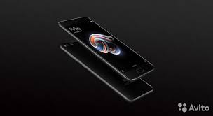
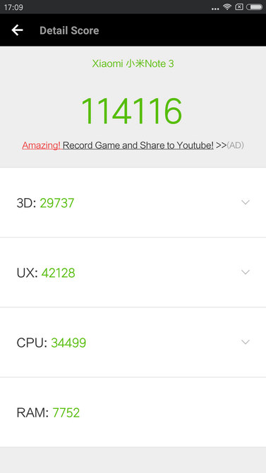
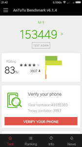
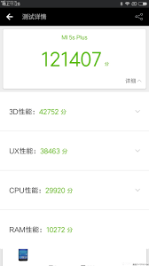
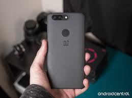
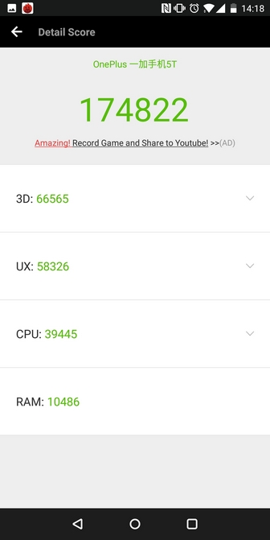

топ 5 смартфонов до 700 долларов
5 место
Xiaomi Mi Note 3
цена:291$

Ваш выбор – инновации
Новый Xiaomi Mi Note 3, вобрав в себя технические
характеристики флагмана Mi 6, отличается
увеличенным до 5.5 дюймов дисплеем.
Наслаждайтесь высокой детализацией
изображения, безупречными результатами
съемки, впечатляющей автономностью
и прекрасной работой в многозадачной среде.
Смартфон идеально подходит для работы
и отдыха.
Высокая производительность
Xiaomi Mi Note 3 оснащен высокотехнологичным
процессором Snapdragon 660 и 6 Гб оперативной
памяти. Вы можете навсегда забыть о зависаниях
и долгом отклике приложений – даже в режиме
многозадачности все запускается мгновенно.
Выходите победителем из виртуальных сражений,
монтируйте видео для Instagram или редактируйте
презентацию «на ходу» – смартфон справится с
любой задачей.
Xiaomi mi note 3 в antutu

Основная камера
Новинка оснащена двойной камерой,
состоящей
из основного 12 Мп сенсора с размером пикселя
1.25 мкм и портретного 12 Мп сенсора.Ключевая
особенность второго модуля – возможность делать
выразительные снимки с эффектом «боке».
Благодаря технологии 2-кратного оптического зума
вы получите безупречные кадры при
приближении.
4-осевая система стабилизации
изображения избавит от эффекта «смазывания»
и «дрожания» во время съемки. Камера
записывает видео в разрешении 4К UHD.
Где купить?
купить в Украине
купить в России
купить в Беларуси
4 место
Xiaomi mi5
цена:268$Неограниченные возможности
Смартфон Xiaomi Mi5 64GB станет отличным помощником
и другом в работе и учебе. С этим гаджетом перед вами
откроется множество возможностей, благодаря безупречному
качеству сборки и высокой производительности. Устройство
вас также приятно удивит своим небольшим весом – всего 129
грамм и изогнутым ЗD корпусом со стеклянным покрытием. Держать
в руках Mi5 одно удовольствие.
Высокопроизводительная работа
Смартфон Xiaomi Mi5 64GB базируется на 4-ядерном процессоре
Qualcomm Snapdragon 820 и графической подсистеме Adreno 530.
Такое сочетание обеспечивает высокий уровень производительности
при более низком энергопотреблении. Гаджет оборудован 3GB оперативной
памяти, которой более чем достаточно для ресурсоемкой четкое работы без тормозов.
xiaomi mi5 в antutu

хорошая камера
Mi5 оснащен инновационной технологией 4-осевого оптического
стабилизатора изображения и сапфировым защитным стеклом
объектива камеры – высококачественные снимки даже в ночное время вам обеспечены.
Где купить?
и другом в работе и учебе. С этим гаджетом перед вами
откроется множество возможностей, благодаря безупречному
качеству сборки и высокой производительности. Устройство
вас также приятно удивит своим небольшим весом – всего 129
грамм и изогнутым ЗD корпусом со стеклянным покрытием. Держать
в руках Mi5 одно удовольствие.
Qualcomm Snapdragon 820 и графической подсистеме Adreno 530.
Такое сочетание обеспечивает высокий уровень производительности
при более низком энергопотреблении. Гаджет оборудован 3GB оперативной
памяти, которой более чем достаточно для ресурсоемкой четкое работы без тормозов.
стабилизатора изображения и сапфировым защитным стеклом
объектива камеры – высококачественные снимки даже в ночное время вам обеспечены.
купить в Украине
купить в России
купить в Беларуси
3 место
Xiaomi mi 5s plus
цена:306$В мельчайших деталях
Со всей тонкостью
Перед вами - изумительный 5.7-дюймовый
IPS-дисплей с 1920 x 1080. Он позволяет
рассмотреть мельчайшие детали. Фотографии
на нем буквально оживают: настолько они
детализированные и красочные. При уровне
яркости 550 нит, контрастности экрана 1300: 1 и
охвате цветовой палитры NTSC 94% каждый
элемент отображается кристально четко.
Возможности дисплея позволяют использовать
смартфон под прямыми солнечными лучами.
Невероятная мощь
С мощным процессором Qualcomm Snapdragon 821,
4 Гб ОЗУ и графическим ускорителем Adreno 530
вы сможете решить любые задачи с невероятной скоростью:
от запуска ресурсоемких приложений
до поиска в Сети. Наслаждайтесь плавной работой в режиме
многозадачности и молниеносно погружайтесь в мир любимых игр.
Разработчики Xiaomi решили отказаться от слота для SD-карты
в своих новейших моделях. Такие меры помогут разгрузить процессор,
снизить потребление энергии и избавиться от ошибок
и низкой производительности при параллельной обработке нескольких процессов.
Xiaomi mi 5s plus в antutu

Xiaomi сделала крупное обновление, снабдив Mi 5s Plus
основной камерой на базе двух 13-мегапиксельных
сенсоров Sony IMX378.
Стандартный RGB и монохромный датчики позволяют
создавать снимки
поразительные высокого разрешения и избегать
цифрового шума.
Экспериментируйте со светом и тенями днем и
создавайте точный источник света
в ночное время благодаря
двойной светодиодной вспышке.
Предусмотрена запись видео
формата 4K (30 fps) и 1080p (30 fps).
где купить?
купить в Украинекупить в России
купить в Беларуси
2 место
Oneplus 5t
цена:583$
Стильный дизайн
Алюминиевый корпус в сочетании с гладким
кристально чистым дисплеем
придает модели надежности
и смотрится неимоверно стильно.
Цельнометаллическая поверхность без швов
изюминка дизайна модели.
Дисплей с технологией матрицы Full Optic AMOLED
и соотношением сторон 18:9 отличается
продолговатой формой.
Высокая производительность
Смартфон функционирует на базе процессора
Qualcomm Snapdragon 835,
к производительности которого
претензий не возникнет.Его мощность и производительность
позволяет без труда запускать ресурсоемкие игры и приложения.
Объем оперативной памяти позволяет
быстро и беспрепятственно выполнять ежедневные задачи
Oneplus 5t в antutu

Удвоенное качество снимков
OnePlus 5Т оснащен высокоуровневой сдвоенной камерой
размером 16 и 20 мегапикселей. Сдвоенная камера и особая
встроенная «Технология интеллектуального пикселя»
оптимизируют качество съемки для создания превосходных
фотографий с очерченными границами объектов
даже при слабом освещении.
где купить?
купить в Украинекупить в России
купить в Беларуси
1 место
Oneplus 6
цена:556$
Цветное настроение
Смотрите фильмы и видеоклипы, играйте и общайтесь с удовольствием
на большом дисплее с разрешением 1080 x 2280 пикселей и соотношением
сторон 19:9. Матрица Optic AMOLED подарит вам невероятно яркие и
насыщенные цвета, а также повышенный контраст и правильную цветовую
температуру, которые делают картинку на OnePlus 6 более реалистичной.
Топовая начинка
Новый флагман OnePlus настолько же многозадачен, насколько и вы.
Чем бы вы ни занимались, мощный чипсет Qualcomm Snapdragon 845
справится с любой задачей. Максимальная тактовая частота этой
8-ядерной платформы достигает 2,8 ГГц. Этого, при поддержке 6 Гб
(8 Гб) оперативной памяти, достаточно даже для самых требовательных
приложений и игр. К тому же, вся эта передовая начинка будет
работать под управлением новейшей операционной системы
Android 8.1 Oreo с оболочкой Oxygen.
oneplus 6 в antutu

Качество, достойное вас
Станьте профессионалом мобильной фотографии с помощью OnePlus 6!
Его основная камера построена на базе двух фотомодулей с
разрешением 16 и 20 Мп, апертурой f/1.7 и фазовым автофокусом.
Где купить?
купить в Украинекупить в России
купить в Беларуси